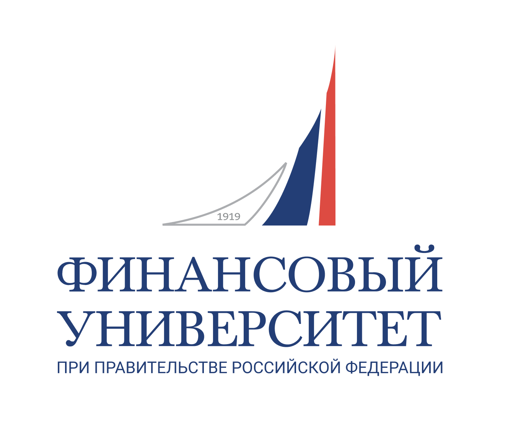
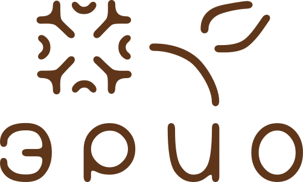
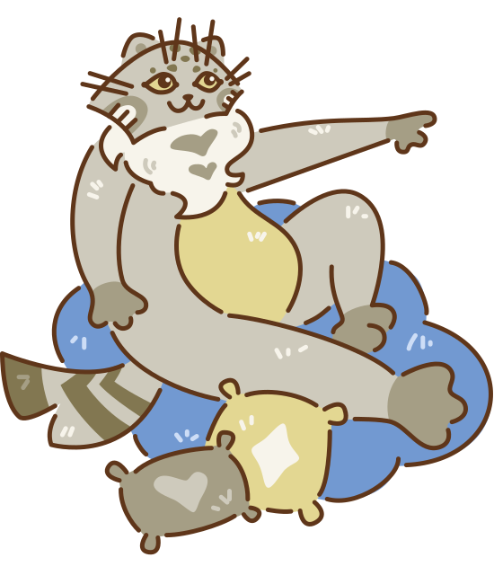
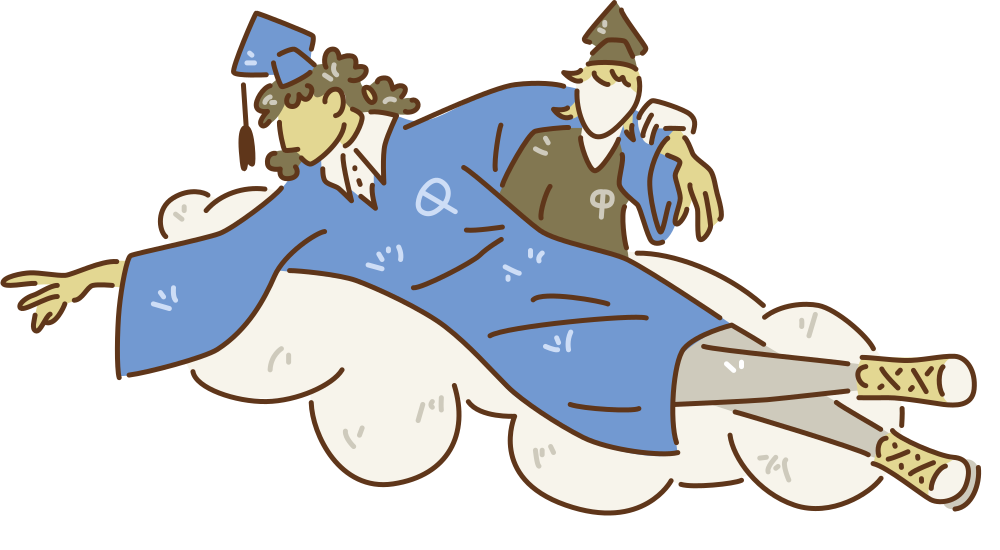

финиковый справочник
Финик — больше, чем проект
Привет, студент!
Я — Финик, кот-хранитель. Живу в QR‑кодах по всему корпусу на Съезжинской, 15-17. Сканируй меня, когда теряешься: подскажу, где поесть, как найти деканат, куда сдать батарейку, в какой клуб записаться. Учиться легче, когда рядом есть кто-то пушистый и понимающий.
Семья, которая случилась случайно
Знаешь, бывает такое: собираешься делать проект, а в итоге находишь людей, с которыми хочется не только работать, но и задерживаться после пар, шутить, спорить и пить чай. С нами так и вышло.
Мы не выбирали друг друга — нас свели идеи. А остались мы уже как семья. Финик стал не просто заданием, а чем-то, во что мы вложили душу. И друг в друга — тоже.
Поэтому мы хотим тебе пожелать: найди здесь свою команду. Неважно, будет ли это проект, учёба или просто посиделки в холле. Люди, с которыми легко и надёжно, — это то, что остаётся с тобой даже после того, как диплом уже на полке.
Кто мы?
За Фиником стоят не «проектная группа по заданию». За Фиником стоят живые люди, которые сами были первокурсниками, сами терялись в этих коридорах и стеснялись спросить «а где тут деканат?».
Вика — руководитель. Договаривается, организует и следит, чтобы Финик не залёживался.
Варя — та, кто оживила Финика. Собрала работу остальных в этот сайт.
Поля — та, кто вдохнула в Финика душу. QR‑коды, страницы, чтобы всё открывалось без глюков.
Коля — голос Финика. Вытащил из студентов лайфхаки и уговорил клубы рассказать о себе.
Мы не получаем за это денег. Мы просто хотели сделать так, чтобы ты чувствовал себя в вузе немного теплее. Это наша лапа помощи от студентов — студентам.
Как это работает?
1. Находишь наклейку с Фиником в корпусе.
2. Наводишь камеру на QR‑код.
3. Получаешь короткий, полезный ответ.
4. Улыбаешься и идёшь дальше.
Сканируй Финика, и пусть сессия сдаётся легко!